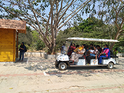
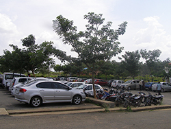
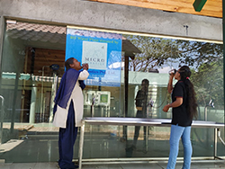
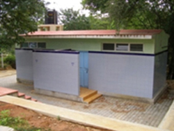
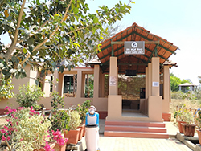

FACILITIES




BATTERY OPERATED VEHICLE
PARKING SPACE
DRINKING WATER
RESTROOMS

BABY CARE UNIT
WHEEL CHAIR
FIRST AID KIT
ATM
BANNERGHATTA NATIONAL PARK
Bannerghatta National Park is a national park in India, located near Bangalore, Karnataka. It was founded in 1970 and declared as a national park in 1974. In 2002, a small portion of the park became a zoological garden, the Bannerghatta Biological Park. There are ancient temples in the park for worship and it is a destination for trekking and hiking. Within the national park area are six rural villages enclosed within three large enclosures for sheep and cattle farming. This park offers a wide range of diverse wildlife to the explorers. Coming from the finest of Bengaluru, Karnataka, this park offers a guided bus tour all along the 6 km safari roads, which is specially made for safaris and foreign tourist gatherers.
Between 1995 and 2021, the dry deciduous forests in the National Park shrunk approximately by 44% due to uncontrolled diversion of forest land for agricultural purpose, urbanisation, etc
SUVARNAMUKHI STREAM,the main source of water for the animals of the park, runs through the center of the park and originates at Suvarnamukhi hills, which extend to over a km in length. At a distance of around two km from the hills is the Suvarnamukhi, the water of which according to legends has curative powers
TIGER SAFARI: The park houses 33 tigers, including 7 white tigers. Tigers are maintained in three groups-while two groups rest in their respective enclosures, the third group is released in the reserve forest area for viewing by tourists.
GEOGRAPHY
The 65,127.5 acre (260.51 km2) national park is located about 22 km south of Bangalore in the hills of the Anekal range with an elevation of 1245 - 1634m. The park has a hilly terrain of granite sheets under moist deciduous forest valleys and scrubland on higher areas. Sixteen villages border the park. Most of the national park consists of artificial forest, and some animals have been introduced. The park is part of a wildlife corridor for elephants which connects the BR Hills and the Sathyamangalam forest. The park is contiguous with Talli reserve forest in the southeast and Bilikal forest in the south